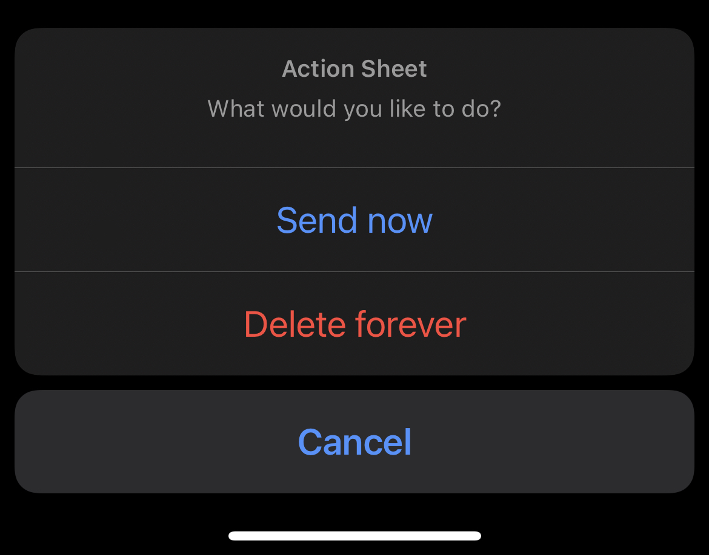

07 April 2021
Note: This post is part of "Working with UIKit components".
An action sheet presents two or more choices related to an intentional user action. On smaller screens, an action sheet slides up from the bottom of the screen; on larger screens, an action sheet appears all at once as a popover.
Notese la frase, "related to an intentional user action", en principio un action sheet debe utilizarse con el fin de que el usuario ejecute alguna acción esperada.

Tambien se menciona "On smaller screens, an action sheet slides up from the bottom of the screen; on larger screens, an action sheet appears all at once as a popover.",
Es decir que los action sheets están diseñados para pantallas pequeñas y para pantallas mas grandes se debe utilizar un Popover(Alerta,Dialogo)
Es muy interesante entender esta distinción, y además se puede ver como apple cuida su linea de diseño ya que inclusive en la documentación de desarrollo,
menciona que esta alerta no está soportada para tvOS y se debe usar UIAlert
Use an action sheet — not a menu — to provide choices related to the action people initiated. For example, when people take an action that might destroy data, an action sheet can let them confirm or cancel the action, in addition to providing a Save or other option that acts on the data. Use a context menu if you need to provide items that aren't closely related to the current action.
Los action sheet no son menus y los acciones que impliquen algo importante o que altere la data es escencial presentarlas en Action buttons de tipo destroy, las otras acciones son para ejecutar eventos que no alteran la data pero la involucran.
Se deben evitar scrolls ya que entre mas acciones tenga un action sheet mas tiempo y esfuerzo le tomará a las personas seleccionar una opción, para esos escenarios de multiples opciones podemos utilizar context menu
Primero entender que los Action Sheets son un tipo de alerta por lo cual es necesario el uso de UIAlertController
Se indica mediante el constructor al UIAlertController que el tipo de alerta es un Action Sheet .actionSheet
— Jhean Carlos